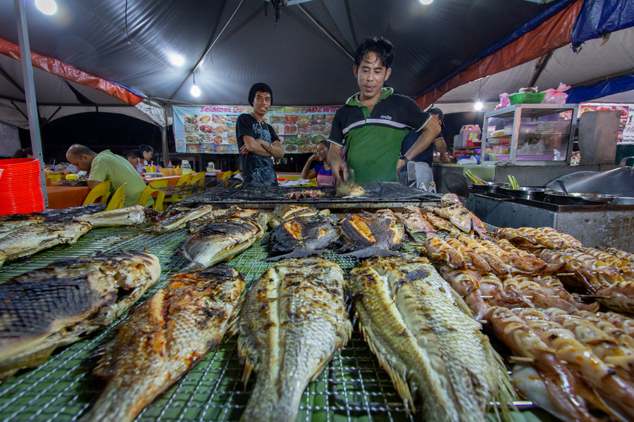
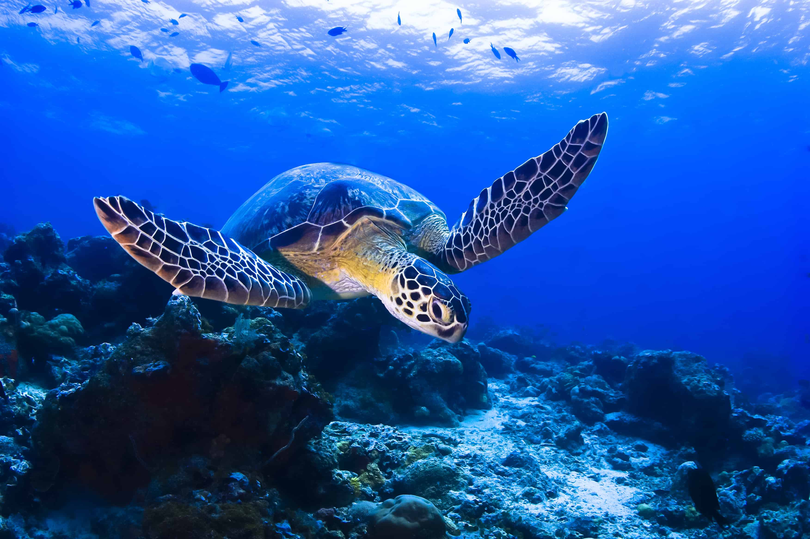
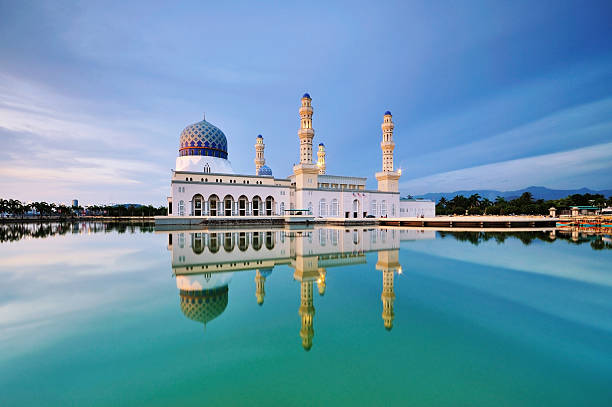
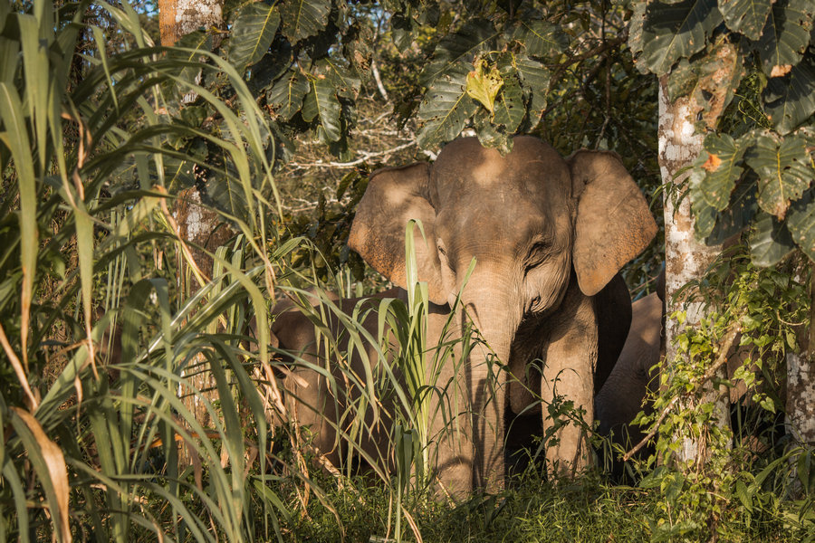
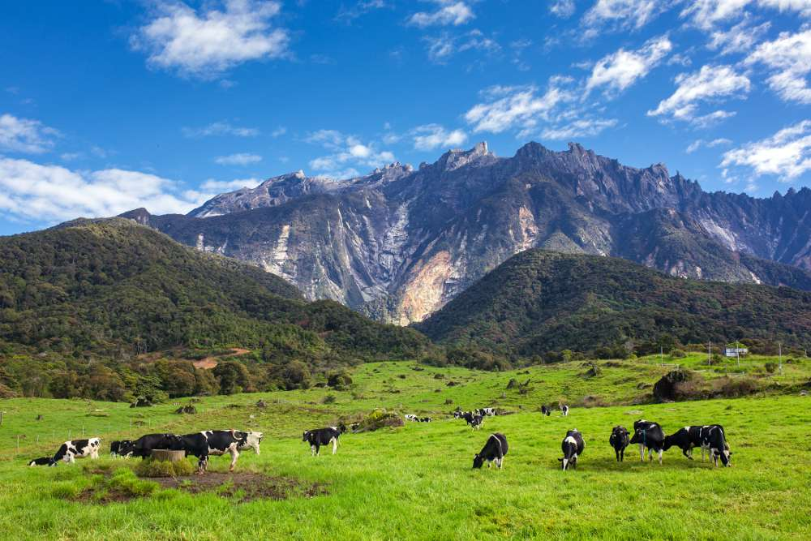
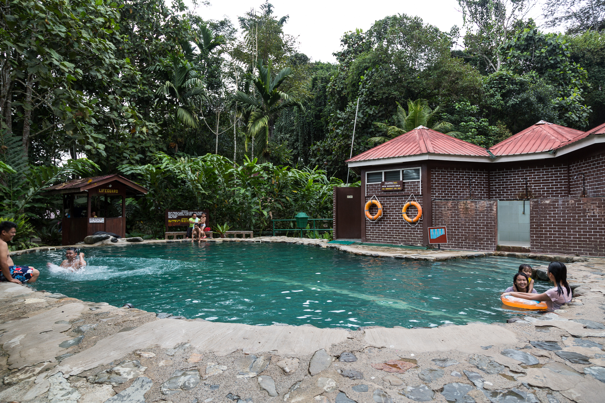
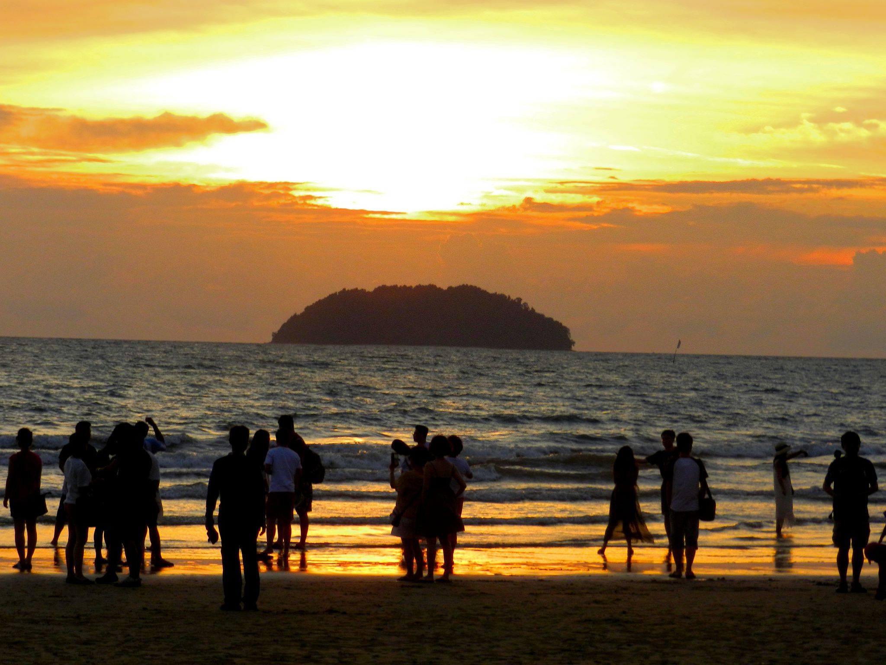
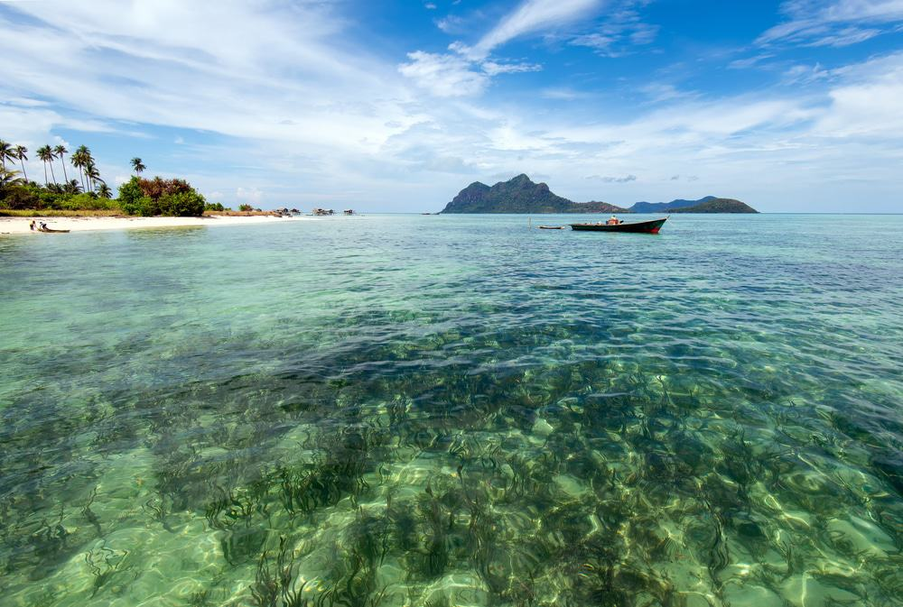
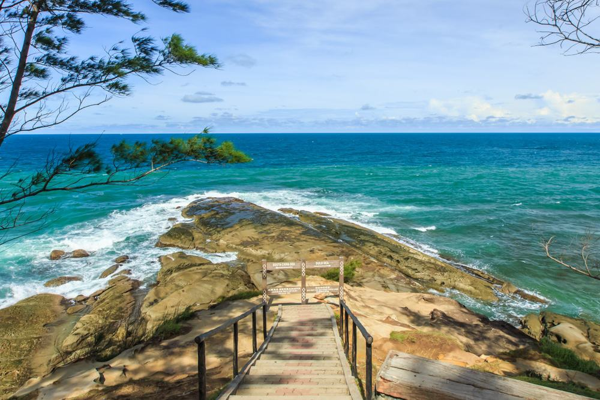
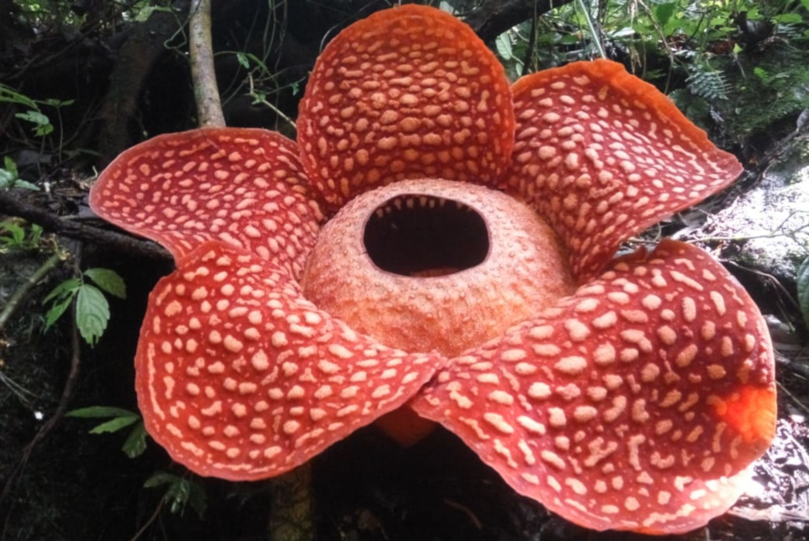

WHAT ARE THE INTERESTING THINGS IN SABAH?
Click the button below to know more information about attractions in Sabah!

Mount Kinabalu is Borneo's and Malaysia's tallest peak. With a height of 13,435 feet, it is the world's third tallest island peak and the 20th most prominent mountain by topographic prominence. The peak is found in the Ranau region of Sabah's West Coast Division.

The night market is located between the Central Market and the Segama Waterfront in Kota Kinabalu. The vendors begin setting up at 5 p.m., and by 6 p.m., there will be a significant number of stalls with a wide range of seafood on show at each stand. Don't be surprised if you come upon a large lobster here! A large prawn costs between RM8 and RM20 each piece, while a lobster might cost more than RM100. The seafood is fresh since the fish landing pier is right behind Central Market, and the hawkers have direct access to it.

Turtle Islands Park is located on the Turtle Islands, which are 3 kilometres north of Sandakan in Sabah, Malaysia, in the Sulu Sea. Selingaan, Little Bakkungan, and Gulisaan are the three islands that make up the archipelago, as well as the surrounding coral reefs and seas.

The Floating Mosque, also known as the Kota Kinabalu City Mosque, is located on the northeastern part of downtown Kota Kinabalu, on the beaches of Likas Bay. The mosque is a superb example of contemporary Islamic architecture with a breathtaking sunset vista. The white mosque is mirrored in the lake around it, which is set against a backdrop of beautiful blue sky.

The Lower Kinabatangan River is home to one of the world's most diverse ecosystems. It is also the first and largest RAMSAR facility in Sabah and Malaysia. The surrounding forest is one of only two known areas in the world where 10 species of primates may be found, in addition to being home to Borneo's indigenous orang utan and proboscis monkey.

Kundasang is a town on the bank of the Kundasang Valley in the district of Ranau, Sabah, Malaysia. It's around 6 kilometres from Kinabalu National Park and 12 kilometres from Ranau town, and it's famous for its seven-day-a-week vegetable market.
The Sepilok Orangutan Rehabilitation Centre is 25 kilometres west of Sandakan in the Malaysian state of Sabah. The centre was established in 1964 as the first official orangutan rehabilitation initiative for orphaned or abandoned infant orangutans rescued from forestry sites, plantations, illegal hunting, and pet keeping.

Poring Hot Springs is around 13 kilometres from Ranau and 40 kilometres from Kundasang, the headquarters of the Kinabalu National Park. The hot springs are located within the massive Kinabalu National Park. The Poring Hot Springs were initially constructed by the Japanese during WWII and have since grown to become one of the most popular tourist spots for both tourists and locals. After a long and difficult walk up Mount Kinabalu, the hot spring waters containing sulphur are pumped into open-air Japanese style spas where you may rest your sore limbs.

The casuarinas or aru trees that line the fine sands give it its name, and this is where you can have a front-row seat to the most spectacular sunset on the planet every evening, as the crimson sun sinks gently into the horizon, turning the broad skies a beautiful scarlet. Kite flying, picnics, team building, and simply eating foods offered at little food carts while watching the sunset are all popular activities here.

Sipadan is Malaysia's only maritime island, rising 600 metres (2,000 feet) above the bottom. It's off the east coast of Sabah, Malaysia, in the Celebes Sea. It was created by live corals that grew on top of an extinct volcanic cone over thousands of years. Sipadan is one of the world's most spectacular scuba diving locations. Sipadan is Malaysia's only oceanic island, and the massive pillar that creates the atoll serves as a haven for a variety of sea creatures and fish. Furthermore, only a few sites on the planet have such a high density of sea turtles.

Borneo is the world's third biggest island, and its northernmost tip is the confluence of two major seas, the South China Sea and the Sulu Sea. The Tip of Borneo is a renowned tourist destination in Sabah, located in the Kudat district. The environment is beautiful, but you may not realise that the spot where you are standing was once a pirate watchtower hundreds of years ago. As a result, the Tip of Borneo is also known as Tanjung Simpang Mengayau, which translates to "the point where the war begins" (in Rungus language).

Rafflesia is a parasitic flowering plant genus in the Rafflesiaceae family. The blooms of some of the species are gigantic, with buds growing from the ground or directly from the lower stems of their host plants; one species boasts the world's biggest flowers.